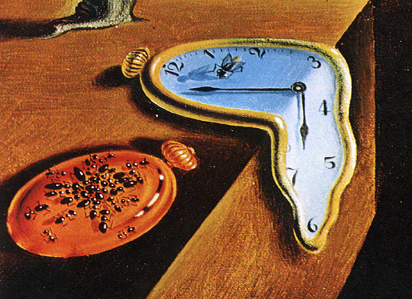

Facts About Black Holes
Myths Debunked
- They are not wormholes, or Einstein-Rosen bridges.
They do not provide shortcuts through space - once you
enter a black hole, you cannot leave.
- They are not wormholes, or Einstein-Rosen bridges.
They do not provide shortcuts through space - once you
enter a black hole, you cannot leave.
- They are not like vacuums, they do not pull in matter. From a distance,
they have the same gravitational pull as other objects of the same mass.
Did You Know?
Once you enter the event horizon, escaping the black requires that you
must travel faster than the speed of light. As objects approach
event horizon, they're horizontally and vertically compressed -- like a noodle.
